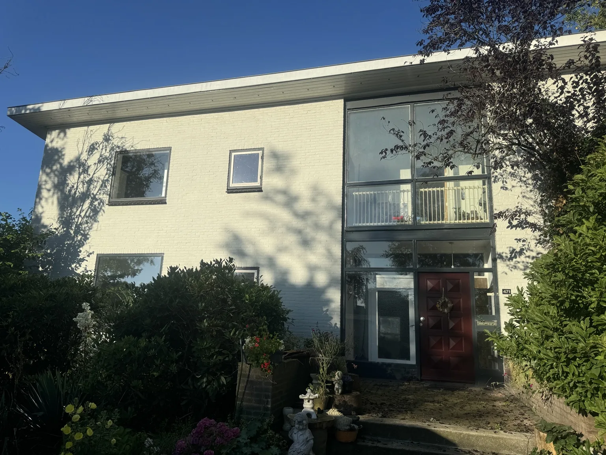

Project — Wesep
Wesep — kozijnen en voorgevel
Vernieuwing van kozijnen en voorgevel met een strakker en moderner eindresultaat.


Aan de voorzijde van deze woning zijn de bestaande kozijnen en geveldelen vernieuwd. Het verschil is direct zichtbaar: de entree oogt moderner, strakker en verzorgder.
Dit soort projecten laat goed zien hoeveel invloed nieuwe kozijnen en een nette afwerking hebben op de totale uitstraling van een woning.
Offerte aanvragen